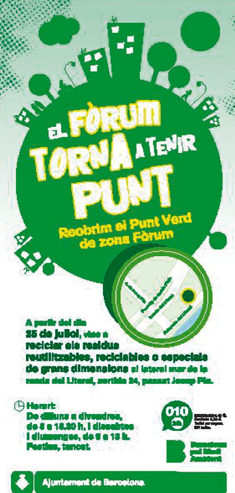

NOTICIAS DESTACADAS

Zona de Bajas Emisiones (ZBE)
La contaminación atmosférica tiene importantes repercusiones en la salud de la ciudadanía. Concretamente, la mala calidad del aire causa más de 3.000 muertes cada año en la región metropolitana de Barcelona.
Por este motivo, la normativa europea y estatal se orienta a preservar estándares cualitativos que tienen como finalidad proteger y restaurar el medio ambiente. Es el caso, sin ir más lejos, de la Ley de cambio climático y transición energética, que obliga a todas las ciudades españolas de más de 50.000 habitantes a establecer zonas de bajas emisiones.
En Cerdanyola, avanzamos en sostenibilidad y salud sin dejar a nadie atrás. El 1 de julio de 2024 entró en vigor la Zona de Bajas Emisiones en Cerdanyola y, a partir del 1 de enero de 2025, se comenzó a sancionar a los vehículos infractores.
| Información destacada
Enlaces informativos a paginas destinadas al cmabio climatico
| Tema | Descripción | Enlace |
|---|---|---|
| Causas del cambio climático | Emisiones de gases de efecto invernadero como el CO2 provenientes de actividades humanas. | IPCC |
| Consecuencias | Aumento de temperaturas, derretimiento de glaciares y eventos climáticos extremos. | National Geographic |
| Soluciones | Transición a energías renovables, reforestación y reducción de emisiones. | ONU - Cambio Climático |
| Educación ambiental | Programas de concienciación para fomentar hábitos sostenibles. | WWF |